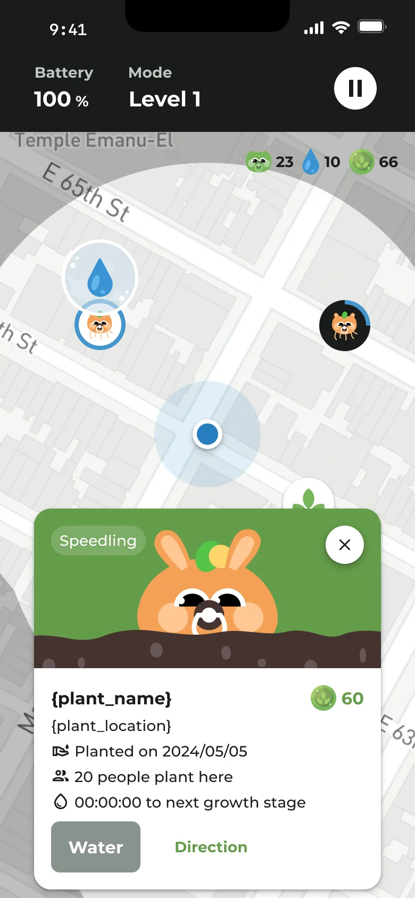
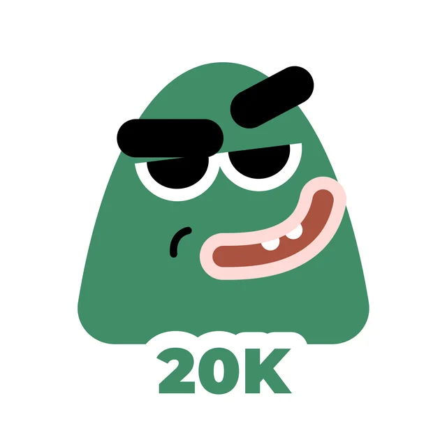
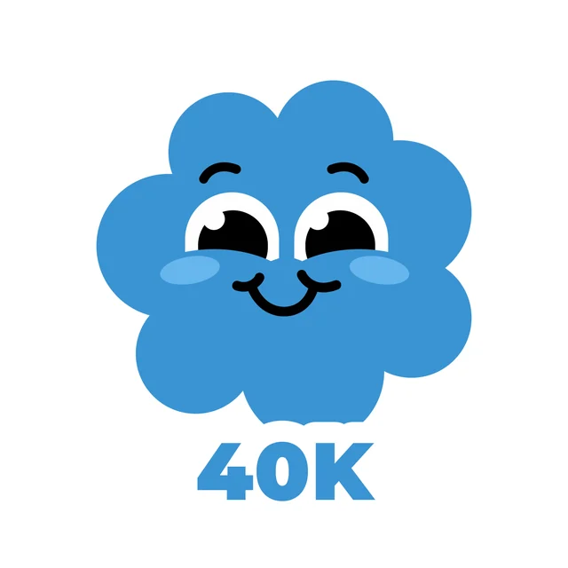
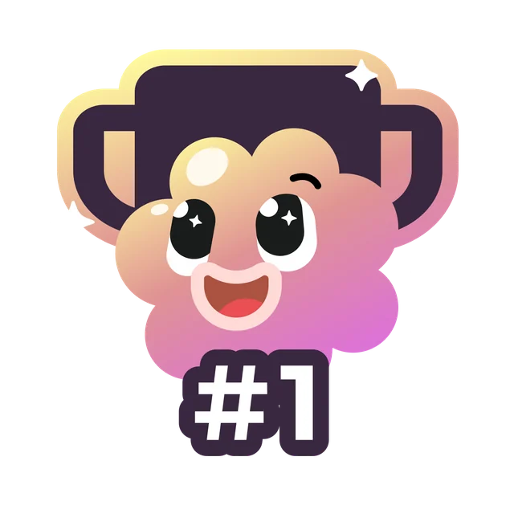
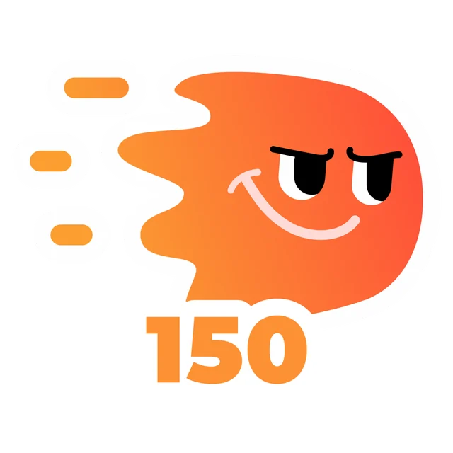
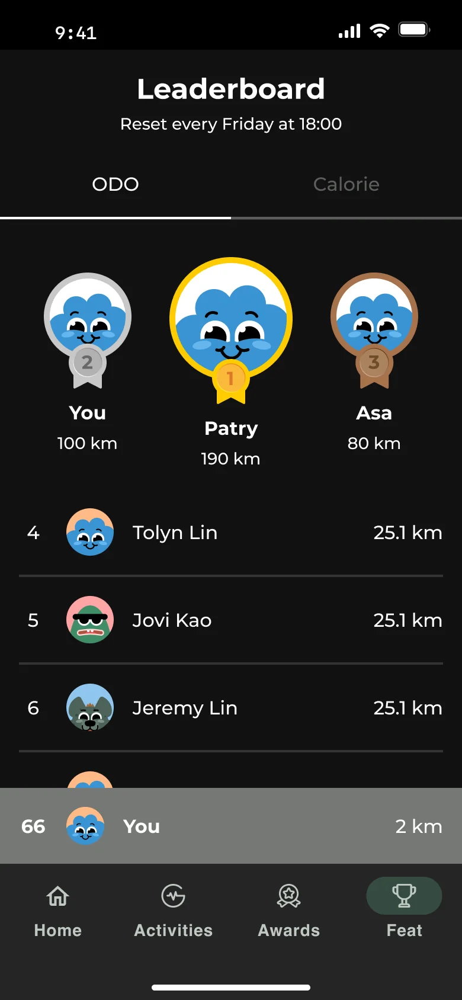
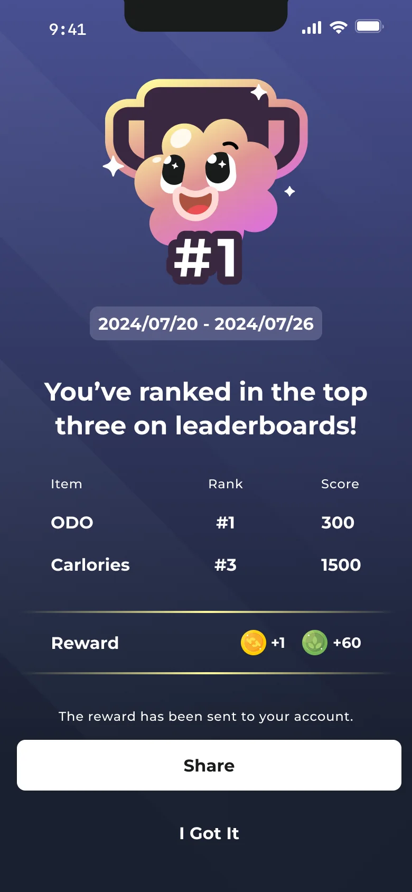

Define the product
I owned product direction, rules, requirements, and delivery planning.
RIDE & GROW · PRODUCT EXPLORATION
An early Flex concept that turned daily cycling into plant discovery. I led the product and designed its world, from the first rules to an internal beta.
RIDE. PLANT. DISCOVER.
Seeds from your journey.
Something to come back to.

What if an everyday commute could also be a small journey of discovery? This early direction for Flex connected cycling with plant collecting and care. Riders earned seeds and water, planted on the map, and grew a collection over time.
Inspired by Pokémon’s sense of discovery, the concept explored a different reward for an ordinary ride: something to nurture after arriving.
I led the product from initial direction to an internal testable app, connecting the game mechanics, requirements, schedule, and end-to-end experience.
I owned product direction, rules, requirements, and delivery planning.
I designed the flows, interactions, and every screen, and drew the plant characters, badges, and visual content in Figma.
My manager and I coordinated with the engineering team to divide the work and move the product into internal testing.
The design connected a routine people already had with a collection they could build. Riding supplied the resources; the post-ride experience made that effort visible.
Earn water and seeds through everyday cycling.
After a ride, return to the map to plant and water.
Develop seeds into plants and unlock the plant collection.
The map brought plant care back to a place. A floating water droplet above a planted character signaled an opportunity to water it; a harvest action marked another step in the growing cycle.
THE MOMENT OF CARE
A droplet gives the next action a visible place on the map, close to the plant it belongs to.
Each rider grows their own plant. The location also shows how many other people have planted there, adding a sense of presence without a shared growing task.
Watering and harvesting connect small actions to the plant’s progress.
Plant collecting and leaderboards offered different reasons to engage: building something of your own, and seeing how your riding compared with others.
Seeds and the plant collection gave each ride a place in a longer progression.
Growth stages and original characters turned accumulated resources into a visible result.
The leaderboard made riding activity comparable and created a reason to return for riders motivated by rank.
I drew a family of expressive badges in Figma, giving achievements a recognizable face. Distance milestones, sharing, and a place on the podium each became something riders could collect and remember.
A COLLECTION WITH CHARACTER




Original badge artwork · Metallic motion treatment for this portfolio
The character designs are from the original project. The dimensional finish shown here is a new presentation of that work.
The leaderboard gave riders a visible place in the group, with separate distance and calorie rankings and a reset every Friday at 18:00. The weekly cycle made the competition time-bound, while a pinned personal row kept each rider’s position easy to find.


A prominent top-three podium establishes the leaders, while the list shows the wider field.
The pinned personal row helps riders find their rank without searching the full list.
A dedicated result screen connects the date range, category ranks, and rewards, with an option to share.
Original design mockups. Names, ranks, and scores shown are illustrative, not measured beta results.
During the company’s closed beta, colleagues rode to improve their leaderboard positions. It was a concrete sign that competition could motivate participation within this group.
That observation had limits. Participants were coworkers, and the app had not been tested with external users. Internal enthusiasm did not establish long-term retention, demand for plant care, or fit with the target audience.
The team reassessed the product’s positioning and commercial direction. For the intended audience of riders aged 30–65+, primarily 40–65, the team judged the playful interactions and visual style to be less aligned with the experience it wanted to offer.
This was a strategic judgment made before external user validation. It did not establish that people in this age group would reject plant collecting. The product subsequently changed direction and developed into today’s Flex.
This exploration captures my work across product definition, original visual design, and delivery, along with the boundary between a promising internal response and a validated product direction.